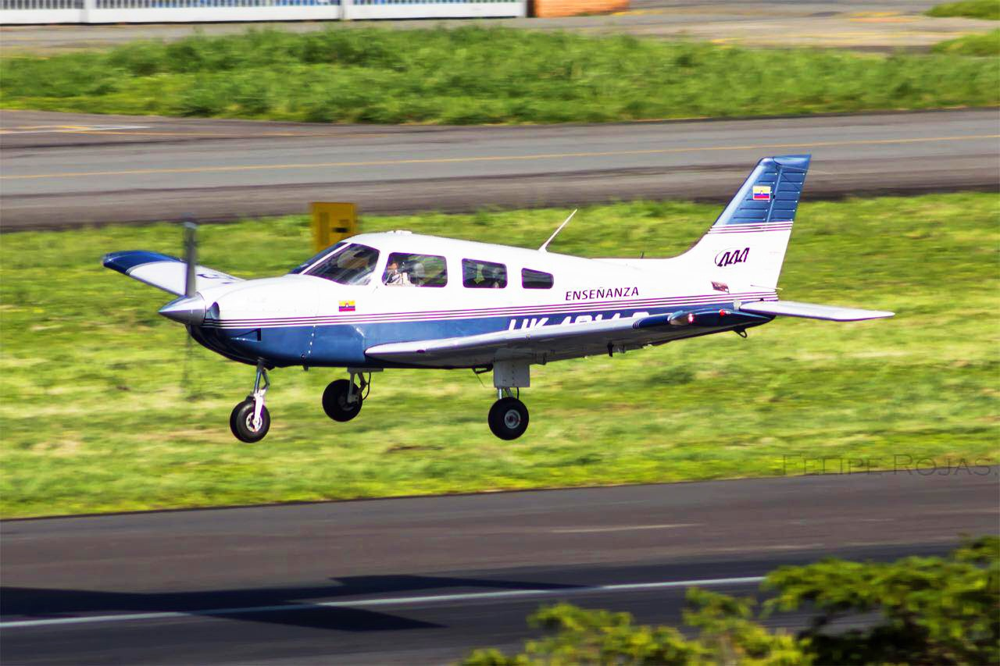
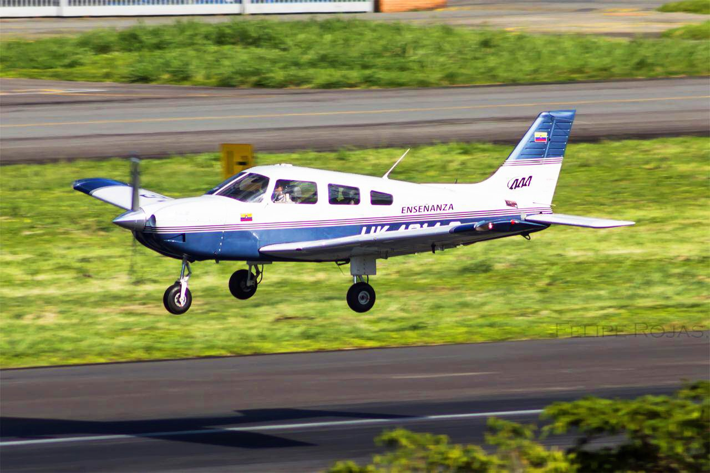
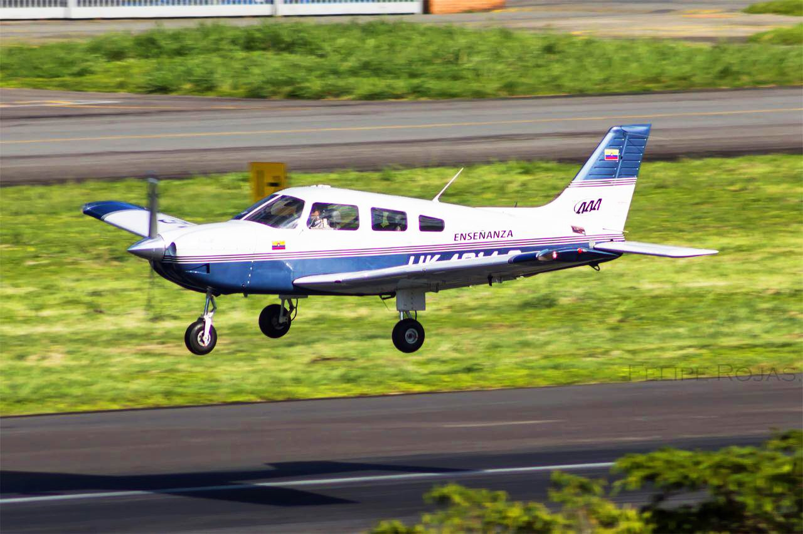
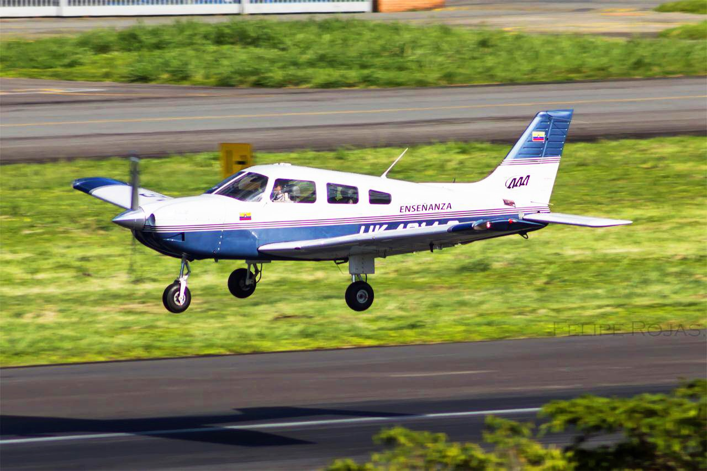

Aviones
Aviones

 
Aviones


Aviones

El empenaje de un avión es la parte trasera que ayuda a controlar su movimiento. Está compuesto por dos partes: el estabilizador horizontal y el estabilizador vertical. El estabilizador horizontal, también llamado timón de profundidad, controla el ascenso y descenso del avión, permitiendo que el piloto ajuste el ángulo de vuelo. Por otro lado, el estabilizador vertical, o timón de dirección, regula el giro del avión hacia la izquierda o la derecha. Estas partes trabajan juntas para mantener la estabilidad y permitir maniobras precisas durante el vuelo.
El diseño del empenaje es crucial para mantener el equilibrio del avión y prevenir movimientos bruscos. La forma y el tamaño de los estabilizadores afectan cómo responde el avión a las fuerzas del aire. Un empenaje bien diseñado proporciona estabilidad en diferentes situaciones, como turbulencia o cambios en la velocidad.
redes